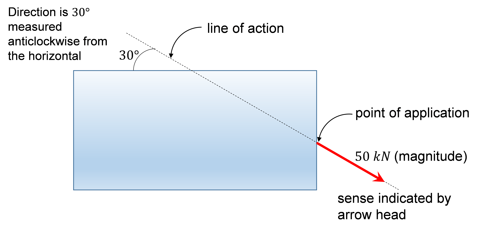
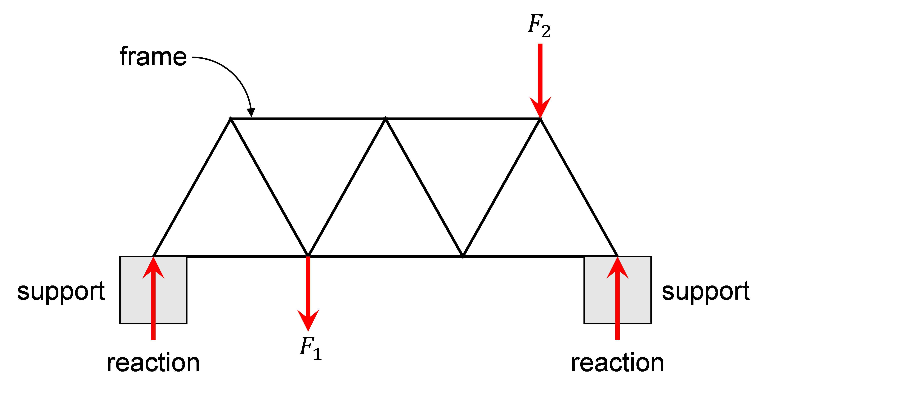
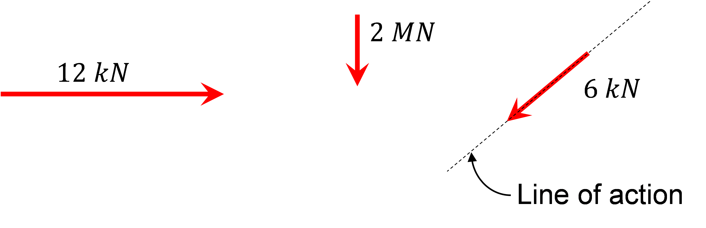
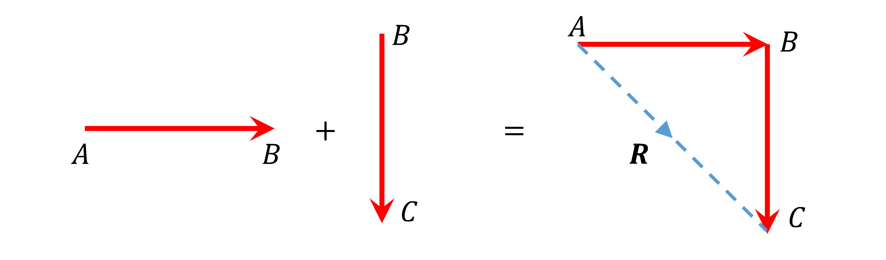
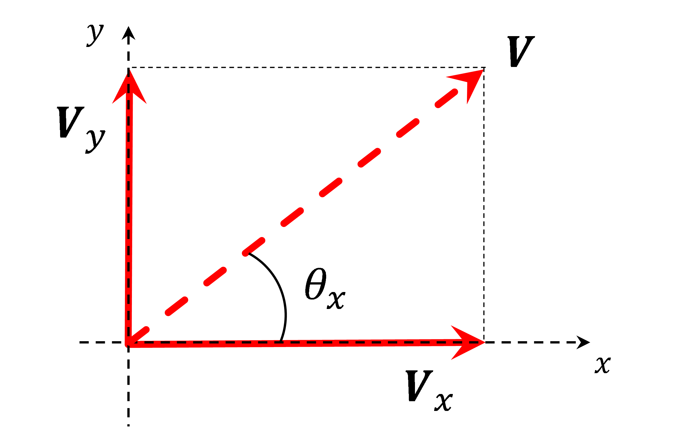

Within the field of solid mechanics, statics is the study of external forces that act on solid bodies. Any resulting deformation is not considered consequently the solid bodies are assumed to be rigid. Furthermore, only bodies at rest or moving with zero acceleration are considered and this means that they remain in a state of equilibrium.
The aim is simply to discover information about the unknown forces and this can be determined from the known forces and geometric data. It is not necessary to know from what material the solid bodies are made.
Forces have four characteristics:

In an engineering context force magnitudes are typically specified in \(kN\) or \(MN\). The sense is often a push or a pull and the direction can be along a line inclined at any angle to a reference axis.
Forces may be exerted on objects directly or indirectly. Wind blowing on the wall of a building is an example of the direct application of a force. The self-weight of a bridge is an indirect force because it originates from gravity acting on the bridge's mass. In these two examples the force is distributed because the point of application covers a large portion of the total dimension available. A concentrated force acts over a relatively small portion of the total dimension available.
Forces can be external or internal. Look at the simple frame in the diagram below.

In this example, the externally applied concentrated forces \(F_1\) and \(F_2\) transmit through the various members of the frame to the external supports at A and B. The frame therefore exerts external forces on the supports. Applying Newton's 3rd Law:
“to every action there is an equal and opposite reaction"
to the supports, the supports must exert equal but opposite external forces on the frame. Those forces exerted are called reacting forces or reactions.
In order to transmit the external forces to the supports each member of the frame plays its part by transmitting some portion of the total externally applied force. The forces transmitted by the members are internal forces. It is these forces which may cause the members to break or fail in some way. The study of internal forces and their effects on the solid bodies involved is called mechanics (or strength) of materials.
Statics deals only with external forces and more often than not requires the engineer to determine the magnitude, direction and sense of the reactions; the point of application is usually known. This can be done without any knowledge about the internal forces and their effects on the solid bodies involved. Now it should be clear why the assumption that, in Statics, all solid bodies are said to be rigid i.e. they do not deform is valid.
A force is a vector quantity characterised by magnitude, direction and sense. In solid mechanics we represent concentrated forces by lines. Usually the lines are not drawn to scale and the force magnitude is stated.

The sense is indicated by an arrow head shown on the line of action.
Vectors cannot be added algebraically unless they have the same line of action. This is because the line of action is as significant as the magnitude and sense. Forces must be added vectorially which can be done mathematically or graphically. When adopting the graphical approach each force to be added must be drawn at a convenient scale to represent their magnitudes. In the example below, force AB is to be added to force BC. Each force is drawn to scale along their respective lines of action with the sense shown by an arrowhead

The outcome of the addition is a resultant force (resultant, \(R\)) and is, in this case, determined by drawing a line from \(A\) to \(C\). Since the lines are drawn to scale the magnitude of the resultant is calculated from: \[\text{Force magnitude} = \text{length of line} \, AC× \text{scale}\] The direction of its line of action can be measured from a reference axis using a protractor.
Engineers frequently work in rectangular components. In 2 dimensions this is usually in the x-y plane.

The magnitude of \(\mathbf{V}\) is a scalar quantity
| The magnitudes are: | Scalar calculation: |
|---|---|
| \(\mathbf{V} \, \text{is} \, V\) | \(V = \sqrt{V^2_x + V^2_y}\) |
| \(\mathbf{V_x} \, \text{is} \, V_x\) | \(V_x = V \cos{\theta_x}\) |
| \(\mathbf{V_y} \, \text{is} \, V_y\) | \(V_x = V \sin{\theta_x}\) |
| \(\mathbf{V} = \mathbf{V_x} + \mathbf{V_y}\) | \(\theta_x = \tan^{-1} \frac{V_y}{V_x} \) |
\[\text{Note:} \, V \neq V_x + V_y \]
Try an Interactive ExampleWhen working with scalars it is important to note their sign (i.e. they can be positive or negative). The sign depends upon the quadrant the vector points
Engineers frequently work in rectangular components. In 2 dimensions this is usually in the x-y plane.